Rows are true genotypes; columns are observed calls.
Only true heterozygotes are miscalled in this simplified model.
Each homozygote outcome is equally likely conditional on a miscall.
A model for heterozygote miscalls
How much error must there be for things to look so bad?
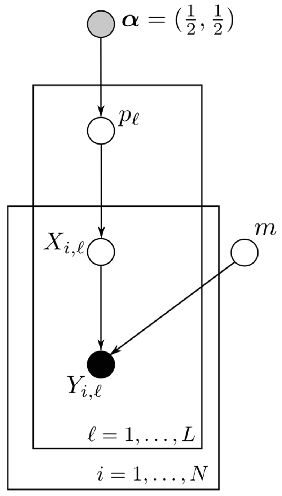
\alpha beta parameters for prior on allele frequency
p_\ell unknown frequency of alternate allele at SNP \ell
X_{i,\ell} true, underlying, but unobserved genotype of individual i at SNP \ell
Y_{i,\ell} the observed (called/scored) but possibly incorrect genotype of individual i at SNP \ell
m the rate at which true heterozygotes are incorrectly called as homozygotes
Estimating m with MCMC
Willow flycatchers
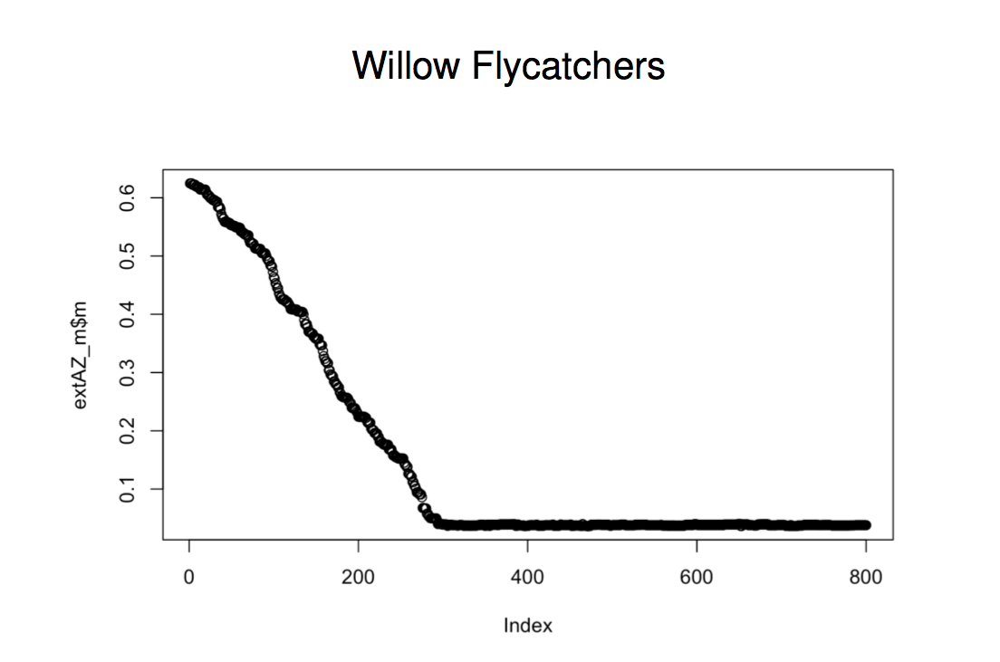
Lobsters
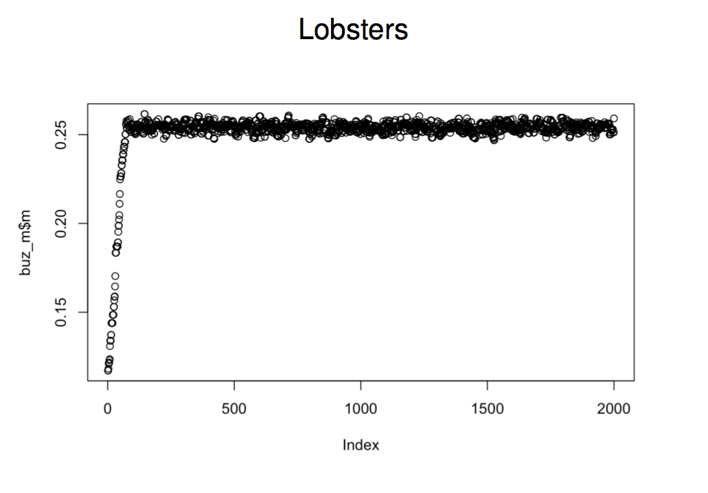
Infer m while allowing uncertainty in allele frequencies and latent true genotypes. Assess burn-in, mixing, and convergence before interpreting summaries.
Published-data survey: bonnethead shark
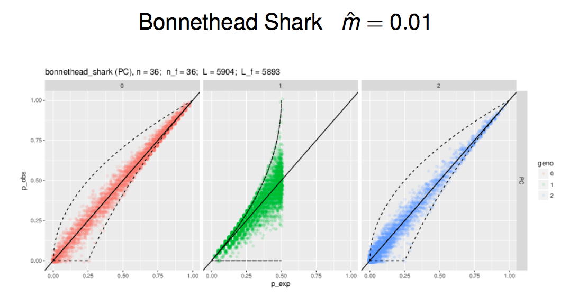
The original analysis estimated \widehat m=0.01.
Published-data survey: red drum
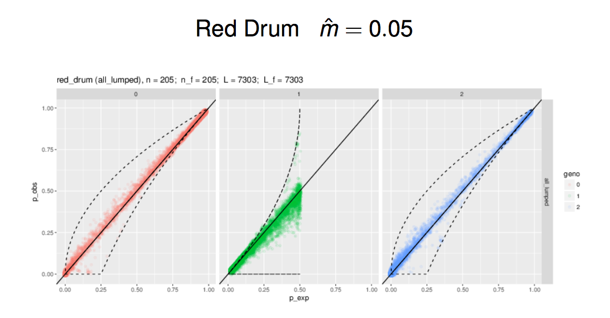
The original analysis estimated \widehat m=0.05.
Published-data survey: Chinook salmon
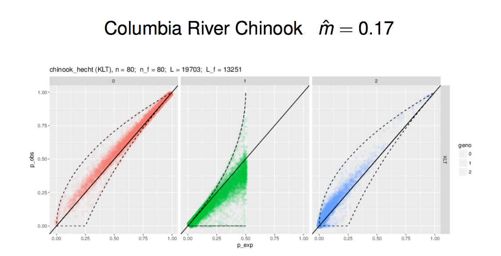
The original analysis estimated \widehat m=0.17.
Published-data survey: snails
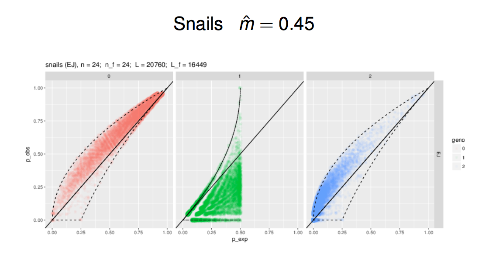
The original analysis estimated \widehat m=0.45.
Miscall and read depth
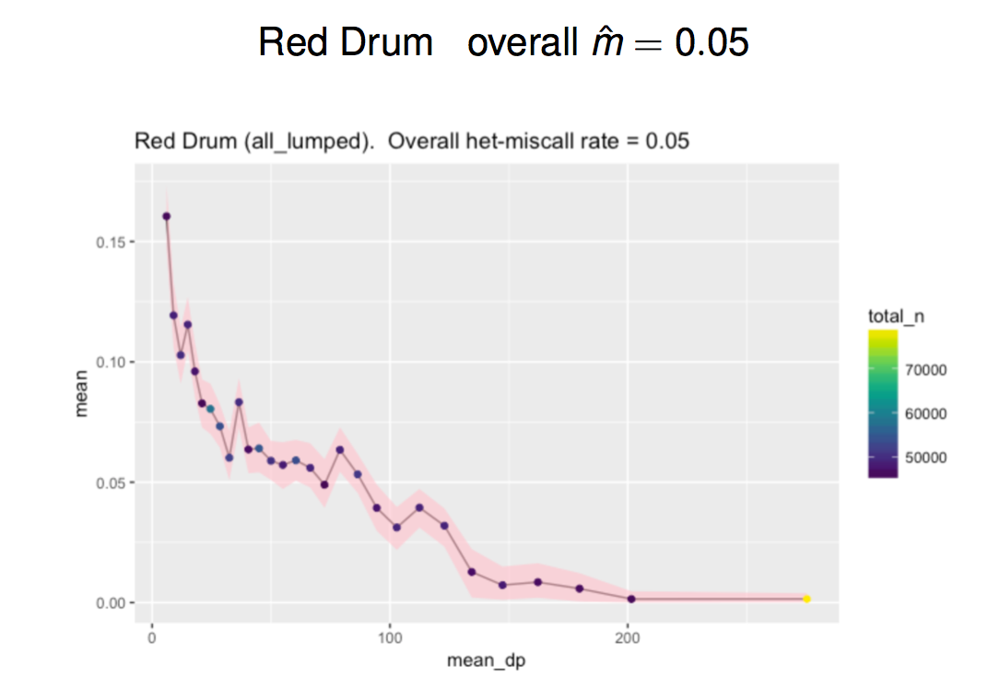
In this red-drum example, low-depth groups have higher estimated miscall rates.
Check accuracy and coverage distributions; mean depth alone can conceal poorly covered loci or samples.
Het miscall effect on downstream analyses
Depends on what you are using RAD for
Allele frequencies: symmetric heterozygote-to-homozygote errors can partly cancel in the average allele count. (Note a huge deal)
Heterozygosity and outlier analyses: dropout changes genotype frequencies and can distort the patterns being tested. (Potentially problematic)
Relationship inference: an error can turn a genuine relative into an apparent mismatch. (Downright disastrous)
An error rate that seems modest for one task can be unacceptable for another.
RAD for CKMR: take-home messages
Use pilot data to evaluate error, missingness, and locus consistency.
Avoid treating “more than 10×” as a universal accuracy threshold.
Estimate genotypes using their posterior with a proper model.
Examine heterozygote miscalls, not just the percentage of missing calls.
RAD can support marker discovery or independent confirmation of candidate kin pairs.
Decide whether it meets the precision requirements of the particular CKMR study.
Capture arrays
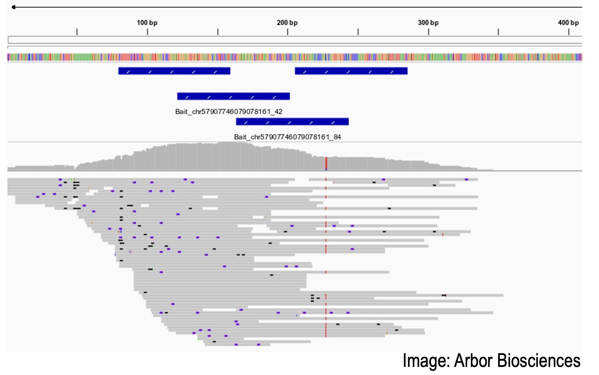
Probes or “baits” hybridize to selected sequences, enriching the library for those targets.
Cost and performance depend on probe design, sample scale, and the sequencing allocation.
RAD plus capture
Prepare a RAD library with sample indexes.
Enrich a selected subset of RAD fragments using capture probes.
Concentrate sequencing on chosen loci rather than every fragment in the original RAD library.
Examples include RAPTURE and DArTcap.
DArtcap was a DArt service at some point. It might be renamed.
(Discussion topic for later: doing genotyping in-house or through a service..)
Amplicon sequencing
Multiplexed PCR primers amplify selected regions of the genome.
Target a small set of informative regions or a larger panel.
Allocate enough usable reads to call the two gene copies reliably.
Retain multiple linked SNPs as microhaplotypes when reads establish their phase.
Panel performance matters as much as nominal marker count.
You still need a lot of amplicons for half-siblings
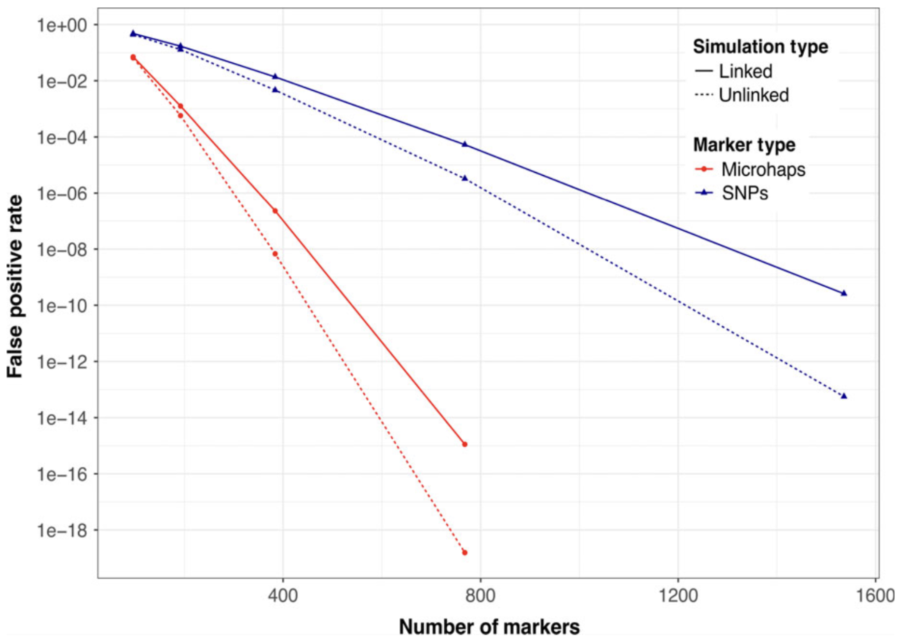
15,000 samples \Longrightarrow\approx 100 million pairs \Longrightarrow Need FPR \approx 10^{-9}
That is at least two plates of amplicons
Microhaplotypes in a CKMR panel
Multiple alleles can make each independently inherited locus more informative.
Retaining phase can improve power without adding a new amplicon.
Loci still need reliable genotype calls and suitable population allele-frequency estimates.
Dependence among loci from physical linkage remains relevant (though reduced compared to dense SNP data).
Validate performance for the relationship classes the study actually uses (CKMRsim).
Microsatellites from sequencing
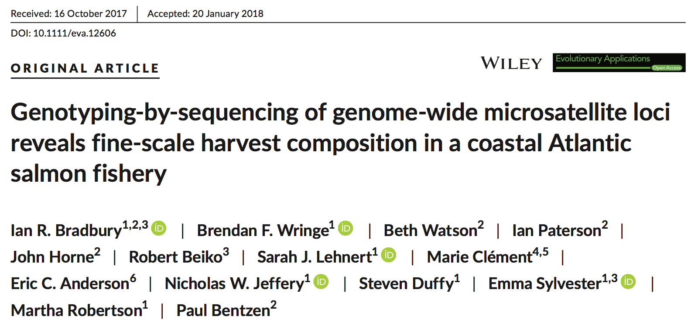
Amplicon sequencing can also recover microsatellite variation. Assess reproducibility, allele calling, and error before relying on it for kin identification.
The cool thing is that after that you have amplicons, but all the different target sequences are using the same pair of primers.
(Krishnakumar et al. 2008, PNAS)
DaRTTag: “Probe-based amplicon creation with a common primer pair”
Although this uses probes, it is fundamentally not a capture array.
Although this PCR-amplifies little amplicons, it is fundamentally different than “GTseq” or standard amplicon approaches.
In GTseq, each amplicon is amplified using its own primer pair.
When many primer pairs are placed together into a PCR soup, they don’t often play nicely
beyond 400 or 500 amplicons, things get squirrely
Apparently not so with DaRTTag. You can put thousands of targets in a single panel
Matt L: $12 per sample, extraction included for 4,000 SNPs?
These can be analyzed as microhaplotypes, too.
Targeting new variants is straightforward if you know the flanking sequence.
Maternally inherited mtDNA
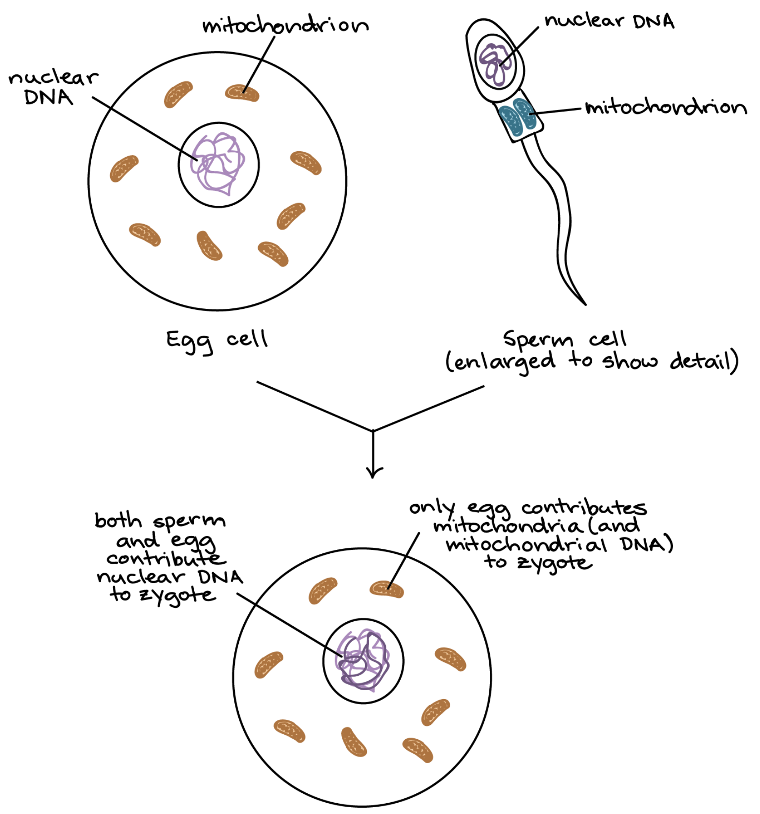
mtDNA is a separate DNA molecule housed in the mitochondria
maternally inherited; circular, \approx 16,000 bp
Multiple copies in each mitochondrion + lots of mitochrondia = lots of copies
Typically all copies within an individual are identical in sequence
Used to be mtDNA was the only gene sequence available
Fell out of favor when nuclear genotyping came online, but….
Super useful for determining the sex of the unobserved parent of two half-siblings
mtDNA inheritance and and half-sibling pairs
mtDNA carried by an individual is IBD with that carried by Mom
Consequently it is also identical in state / sequence
If the kids A and B are a maternal half-sibling pair (MHSP), then they both inherited their mtDNA from mom.
\begin{aligned}
P(M_A = m_i, M_B = m_i \mid \mathrm{MHSP}) &= f(m_i) \\
P(M_A = m_i, M_B = m_j \mid \mathrm{MHSP}) &= 0 \\
\end{aligned}
If they are paternal half sibs, the each got their mtDNA, independently, “from the population”
\begin{aligned}
P(M_A = m_i, M_B = m_i \mid \mathrm{PHSP}) &= [f(m_i)]^2 \\
P(M_A = m_i, M_B = m_j \mid \mathrm{PHSP}) &= f(m_i)f(m_j) \\
\end{aligned}
mtDNA inheritance and and half-sibling pairs
Easiest to distinguish Paternal from Maternal when mtDNA haplotypes are numerous and all at low freuquency.
Best way to achieve that is by sequencing the whole mtDNA molecule.
Only need to do this on identified HSPs
It exists at high copy number (100-1000) in most cells. So, if you target 1X coverage you should get 100-1000 reads at any place in the mtDNA on average.
Phil Morin’s early-days WG sequencing stories
In high diversity species, there are many different haplotypes. Not necessarily so in small populations.
Epigenetic Ageing
Much gene regulation is orchestrated by methylation of CpG sites.
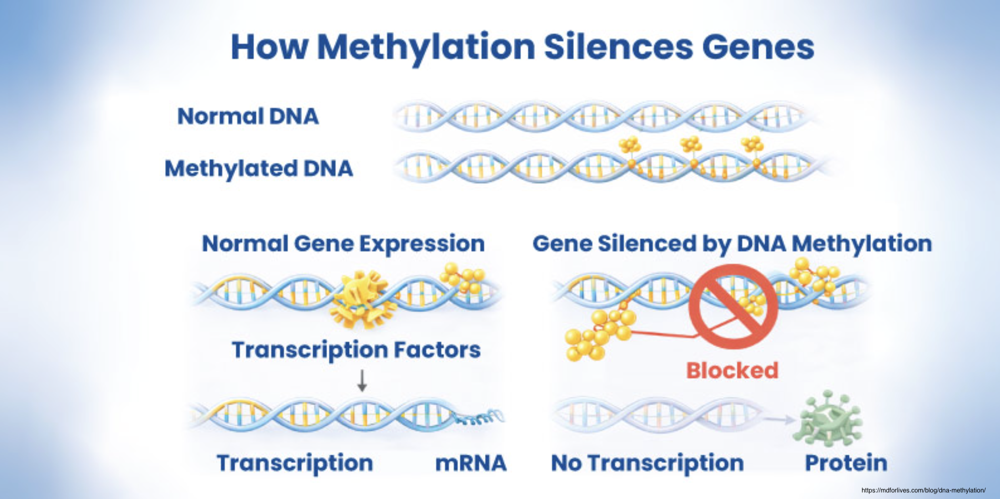
Certain sites predictably change in methylation status through the aging process
Epigenetic Ageing
Methylation of CpG sites can be detected through bisfulfite sequencing
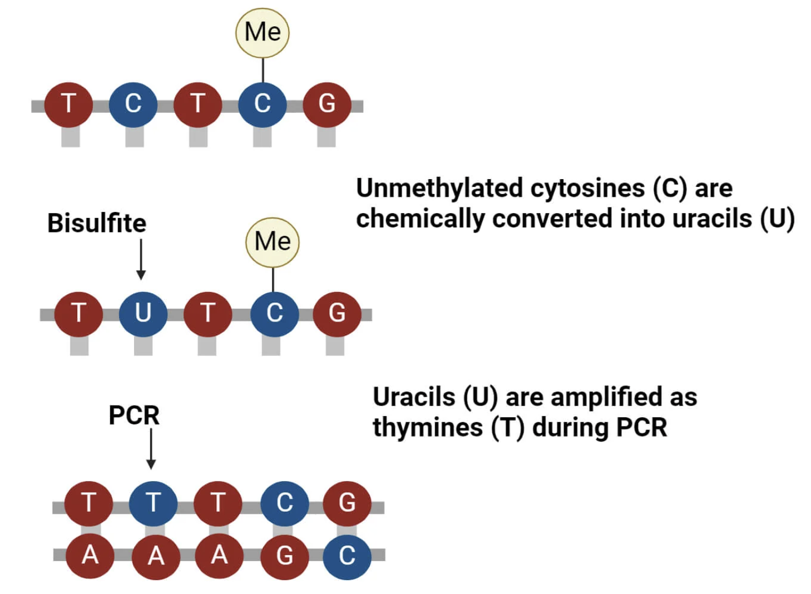
Epigenetic Ageing
Do bisulfite sequencing on a known-age training set of individuals
Target lots of CpG sites (bisulfite RADseq, etc.)
Find those sites that predictably change with age
Test prediction on a test set
Design amplicons and DaRTTAG type assays for high-throughput bisulfite sequencing
Epigenetic Ageing
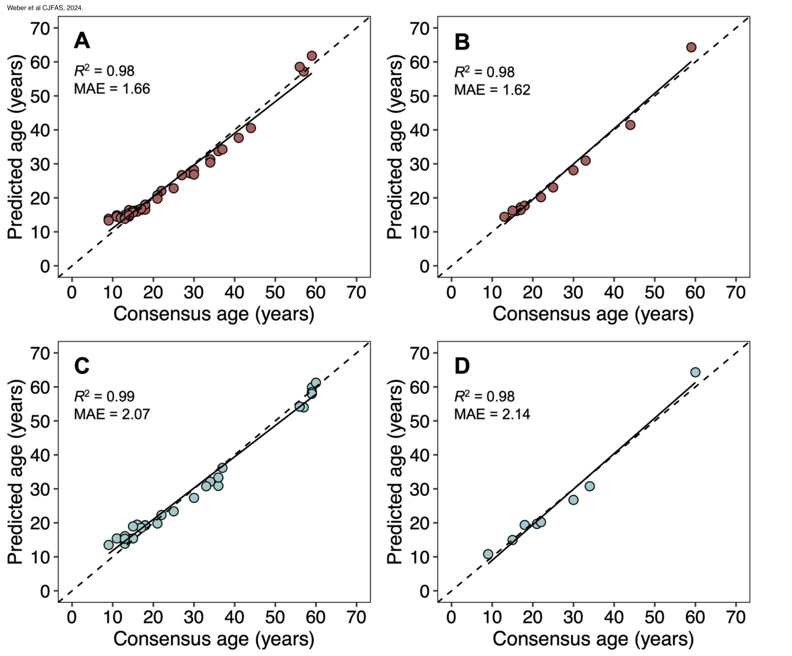
Available from the same tissue sample as the rest of the DNA
Sex ID markers
Not all fish have genetic control of sex
If they do, it is sometimes possible to find genomic variants associated with sex.
One big advantage of targeted sequencing
You can add “special purpose” markers to these panels easily.
For example assays for sex
Conclusions
Sequencing depth must be allocated across individuals and genomic regions.
Missing calls and incorrect non-missing calls are different problems.
RAD heterozygote-miscall diagnostics provide a useful warning, but depend on population and error-model assumptions.
Targeting loci can concentrate coverage; retaining microhaplotypes can retain more information per locus.
Choose and validate a genotyping panel against the needs of the CKMR design.
Clean and complete (no holes!) genotyping data is golden.
Messier, holey data can be handled but it requires a LOT more work and gnashing of teeth. We will briefly descend to the 9th Bolgia of Hell to meet such Sowers of Discord later this week.
Sex ID markers can be added to a standard amplicon or DaRTTAG panel.